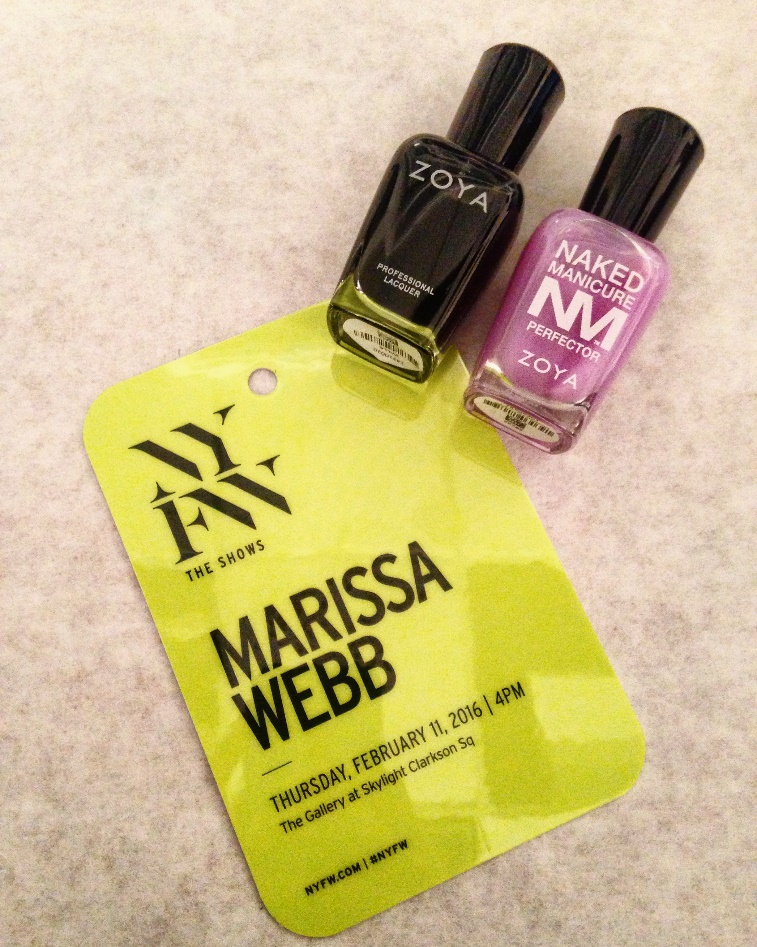
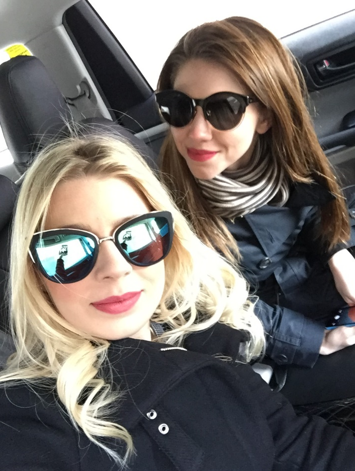
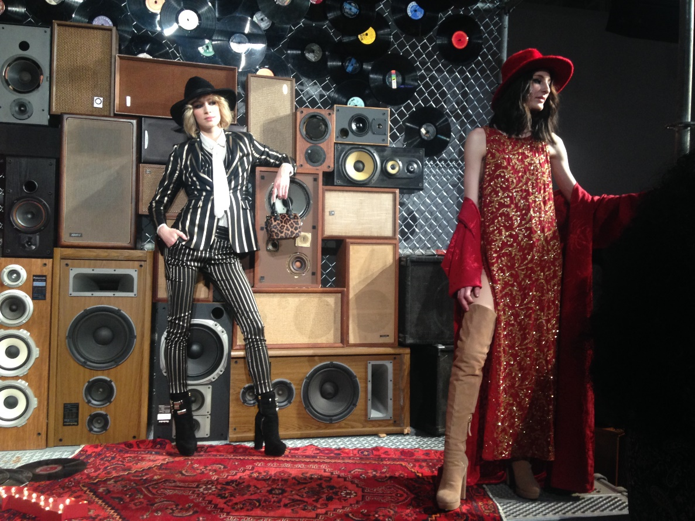
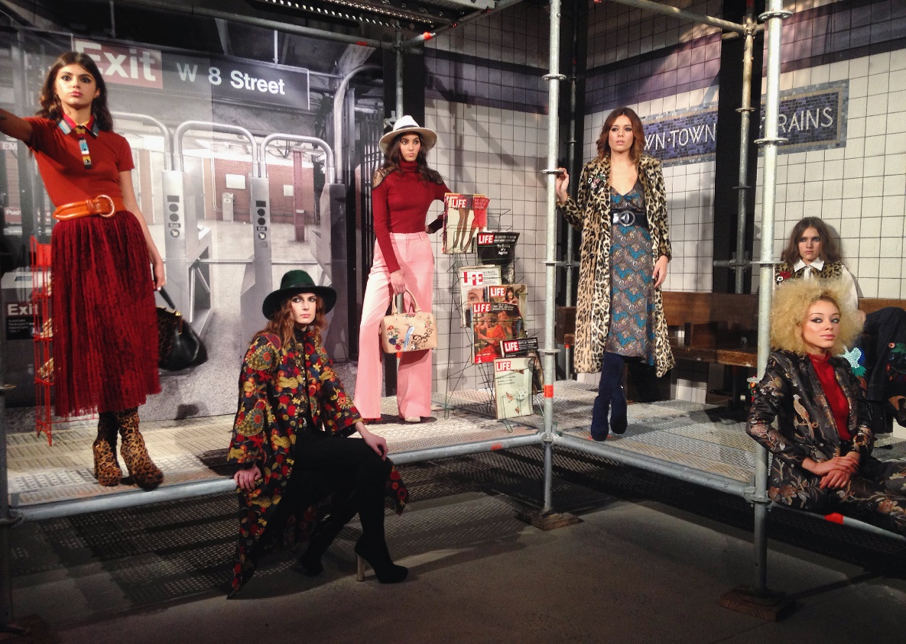
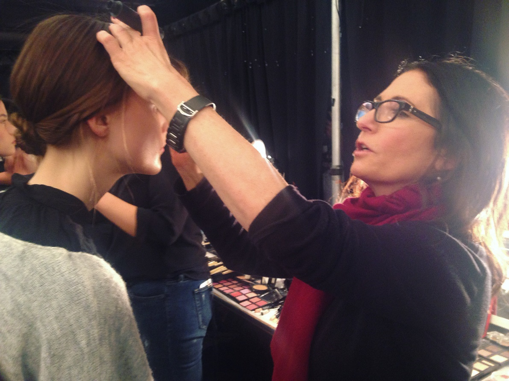
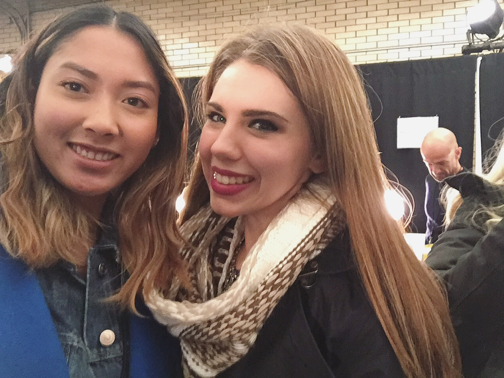

Well friends, my first official New York Fashion Week as a Beauty Editor has come to an end, and though I may not have had a particularly hectic show schedule by any means, I'd say it was a pleasurable -- at times interesting -- learning experience. Whatever glamorous picture you have in your head of what fashion week should be (thanks to all the bloggers out there who talk the talk and snap a photo for proof), allow me to clarify. Is Fashion Week glam-tastic? Yes. Is it everything we dream of? Maybe during the fall.
My journey began last Thursday backstage at the Marissa Webb show. I was popping in to view the ZOYA nail artistry that would adorn the fingertips of all the walking models, and when I say popping in, I literally mean stepping inside the venue to chat about the look for five minutes and then heading out. Time is fashion, after all. Going backstage was an incredible rush. Every which way you turned models were getting their nails done, hair fixed, makeup touched-up, or snacking lightly on fruit and Fiji water. Always bottled. Being there was fabulous. Getting there was another story.
 
Ashley and I left the office around 11:30 to make it for a 12:00 showing. Thanks to lunchtime traffic in the middle of Manhattan it took us 45 minutes in a Via cab to get to the venue. Of course, we were actually fashionably early, and backstage didn't open until 12:30 and would be open to VIPs until 2:30. We decided that instead of waiting in the venue where we clearly didn't belog at the time, we would venture off around Chelsea to find a café. To our dismay, our casual stroll turned out to be us against nature, fighting off whipping winds and temperatures hazing just above the 20 degree mark. By the time we took a quick rest in the café and made it back to the venue, our hair was bent in a thousand different directions, and our skin felt dry and achy from whatever was picked up from the gravel and thrown at us in the wind. Far from glamorous.
Day two was definitely a better experience by far. My god father built the scaffolding for the Alice + Olivia presentation, so he was kind enough to get us in. I was in awe of the clothing, the models, the overall set up of the show, and who showed up. Among the A-list roster was Nicky Hilton, Whitney Port, and Ingrid Nilsen. Unfortunately we got there too late to come in contact with Nicky and Ingrid, but Whitney Port stood one inch away from my arm, and I'm not ashamed to admit my being instantly star-struck. This shouldn't really have come as a surprise, considering once I met Chrissy Costanza from Against the Current pre Fueled by Ramen signing, and I could barely speak. I digress. We schmoozed around the venue for about an hour and a half, making a few rounds gazing at the '70s-inspired designs and people watching. An afternoon I would gladly put on repeat.
 
My third, and final, NYFW appearance was made backstage at the Marchesa runway show. If I had to dream up the perfect ending to my first fashion week, this was probably better. Not only did I get even more up close and personal with the models, I was one foot away from Bobbi Brown herself, listening to her describe the makeup look of the models and the tools she was using to achieve it. Ironically enough, I had written a full gallery on the makeup artists' best sellers that afternoon. Timing is everything, right?
 
The most humbling aspect of the whole experience was running into an old friend. She and I had interned together at Marie Claire, and suddenly, flashing forward almost a full two years later, and we were attending fashion week -- myself representing BestProducts, while she represented Allure. It was a sweet reunion, realizing just how far we've come since our days rummaging through the MC beauty closet, organizing products and fantasizing over what would come next for us. I was almost ready to give up makeup altogether and pursue a career in fitness writing, or continue my education in Creative Writing and come out with a Master's degree and a teaching position. Something that could still be in the cards one day.
I truly believe we all end up where we're supposed to be. Everything happens for a reason, whether it be good or bad. Life, as I'm learning, stops for no one. It's best to take the punches with a grain of salt, embrace all the happiness that surrounds you, and roll with it.